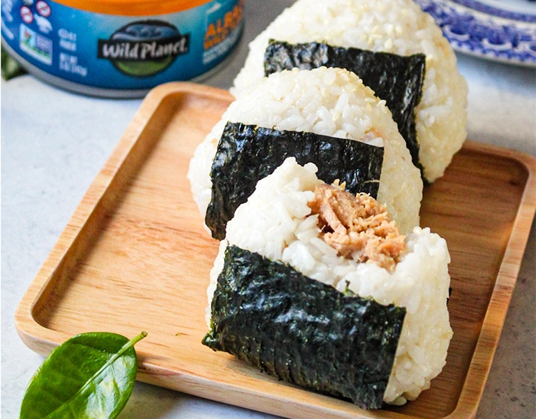

Tuna Onigiri

Description
Onigiri is a japanese rice ball that is a great snack or even meal. It can be made
with many different fillings, but for this recipe we will be using a tuna mayo base.
I find myself taking onigiri's a lot to my university since it is an easy to make
meal and very easy to eat on the move.
Ingredients
- Sushi Rice
- Canned Tuna
- Kewpie Mayo
- Salt
- Rice vinegar
- Seaweed
- Sriracha optional
Steps
- Cook the sushi rice with preferred method.
- While the rice is cooking, we will make the tuna filling.
Strain tuna and pour into bowl.
- In that same bowl, put kewpie mayo and salt. (if you like spicy tuna,
pour sriracha too!) With everything in bowl, mix well.
- Once rice is done, pour 1-3 teaspoons of rice vinegar and mix.
- With a mold, fill the bottom layer with the cooked rice.
- In the middle of the rice layer, put a spoonful of our tuna filling.
- Put another layer of rice over and squeeze the mold down.
- Remove rice ball and line with seaweed.
- Eat fresh, or store with foil or plastic wrap and enjoy!